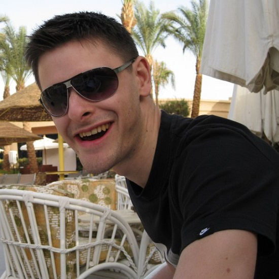

Jürg Hunziker
Andreas Egloff
Regarding the paper
Kort was originally developed as a mobile web app (HTML5) comprised by the bachelor thesis of Jürg Hunziker and Stefan Oberbolz in computer science at the HSR University of applied sciences. Following this, it was enhanced several times and finally rewritten as a native app by Andreas Egloff.
- Tutor:
- Prof Stefan Keller, Institute for Software (IFS)
- Additional thanks go to:
- Pirmin Kalberer, Sourcepole (database service)
- Heroku and Travis CI (free software delevopment services)
- Reto Senn, bitforge AG (concept and design)
- René Bauer, gamelab ZHdK (design)
- Harald Kleiner, KeepRight (data)
- Emil Sivro and Severin Fritschi (website)
- Made possible by:
- OpenStreetMap
- Sencha Touch
- Leaflet
Acknowledgements
Special thanks go out to the many volunteers, which have made significant contributions and continue to do so:
- Beta testers of the app
- Mappers at OpenStreetMap
- Translators of Transifex
- Everyone that has given us feedback, via UserVoice and GitHub
- Everybody who has spread the word about Kort, be it personally, by mail, twitter, blogs, forumposts or any other form of communication.
- Last but not least: Each and every single player of Kort, thanks to you we can improve OpenStreetMap day by day - you rock!